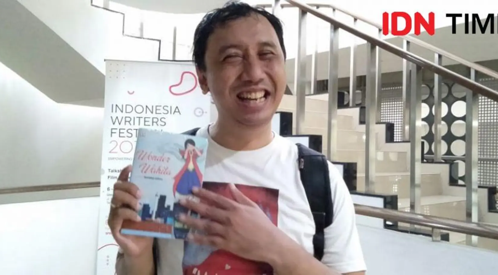

Ramaditya Adikara, “The First Indonesian Blind Blogger” yang Berkarya Lewat Tulisan dan Blog

Profil
Ramaditya Adikara, yang akrab disapa Rama, adalah seorang tunanetra sejak lahir asal Semarang,
lahir pada tahun 1981. Meskipun tidak bisa melihat sejak kecil, Rama tidak membiarkan keterbatasan
tersebut menghalangi semangatnya untuk belajar dan berkarya.
Perjalanan Berkarya
Sejak 1997, Rama mulai menulis kisah hidupnya menggunakan huruf Braille. Ia kemudian berhasil
mendirikan blog tunanetra pertama di Indonesia, www.ramaditya.com, yang menjadi wadah bagi
dirinya dan penyandang tunanetra lain untuk berbagi cerita dan pengalaman.
Rama dikenal sebagai “The First Indonesian Blind Blogger.”
Selain aktif menulis di blog, Rama juga bekerja sebagai jurnalis teknologi di detikinet.com
dan pernah menjadi kolumnis dan penulis lepas di berbagai media. Ia telah menerbitkan delapan buku,
termasuk autobiografi berjudul Blind Power: Berdamai Dengan Kegelapan dan novel remaja Mata Kedua yang
mengangkat kisah kehidupan remaja dengan gaya segar dan orisinal.
Peran & Dampak Positif
Rama juga aktif di dunia pendidikan, khususnya bagi remaja dan penyandang disabilitas.
Ia sering diundang sebagai motivator di sekolah, kampus, dan perusahaan di seluruh Indonesia,
membagikan kisah hidupnya yang penuh inspirasi dan semangat pantang menyerah.
Kini, Rama mengajar sebagai dosen di Politeknik LP3I Pondok Gede, Bekasi, sekaligus terus
berkarya dan menginspirasi banyak orang bahwa keterbatasan fisik bukanlah penghalang untuk
berprestasi dan berkarya.
Pesan Inspirasional
“Saya ingin orang-orang tidak hanya melihat kekurangan saya, tapi juga melihat hasil karya saya.
Keterbatasan bukanlah akhir, melainkan awal dari perjuangan untuk memberi cahaya bagi orang lain.”
Kisah Ramaditya Adikara membuktikan bahwa penyandang tunanetra mampu berkarya dan bercerita tentang
kehidupan dengan cara yang unik dan orisinal, membuka wawasan dan memberi inspirasi bagi banyak orang.